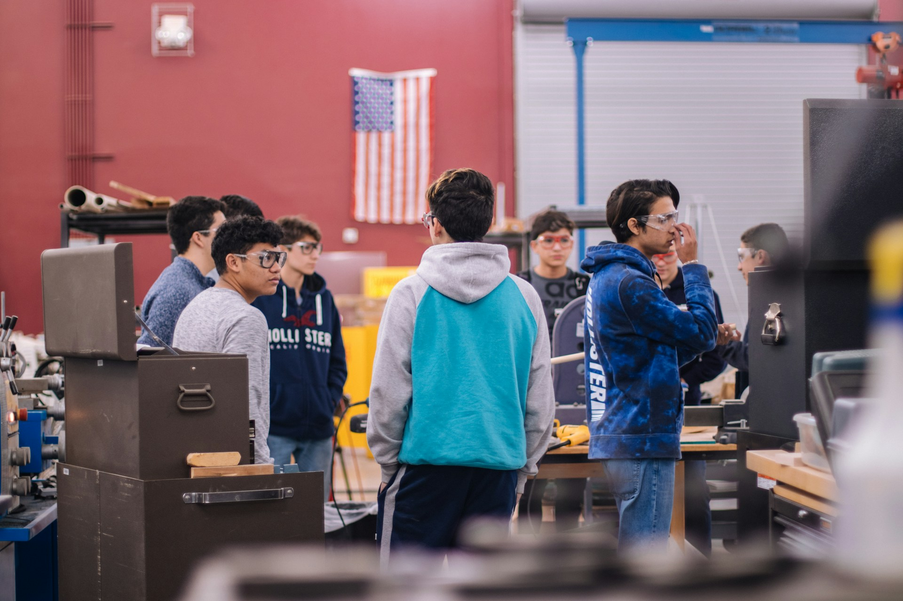

High signal
Opportunities should be relevant to engineering-minded students and explain why they are worth attention.
Leadership roles, project openings, research, internships, competitions, grants, workshops, and ways to contribute to the society.
Browse openings ↓
Opportunities should be relevant to engineering-minded students and explain why they are worth attention.
Every listing should show the role, deadline or timing, location, requirements, and the next step.
Useful information should not remain trapped in private conversations or reach only students who already know where to look.
The founding board is publishing society opportunities first. External research, internship, fellowship, and competition listings can be added and managed through the admin dashboard.
Board roles, committees, project leadership, competition planning, and event ownership.
Leadership openings →Hardware, software, research, mechanics, design, testing, documentation, and communication roles.
Project board →Workshops, mentorship, design reviews, speakers, peer learning, and experience through real project constraints.
Programs + events →Partner-school insight, alumni, research, internships, professionals, and community organizations.
Resource hub →Faculty, alumni, campus offices, employers, labs, organizations, and students can suggest relevant opportunities for review. Submitted listings are not automatically published.